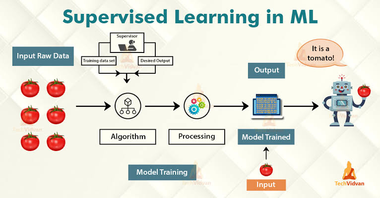

Suprevised Learning
In supervised learning, the training data set you feed to the algorithm includes the desired solutions, called labels.

A typical supervised learning task is classification. A Classification is a process of categorizing a given set of data into classes, It can be performed on both structured or unstructured data. The process starts with predicting the class of given data points. The classes are often referred to as target, label or categories.
The spam filter is really a good example for this, it is trained with many example email along with their class (spam or ham), "ham" refers to good emails or the real ones, and it must learn how to classify new emails, based on the data given to the algorithm during the training.